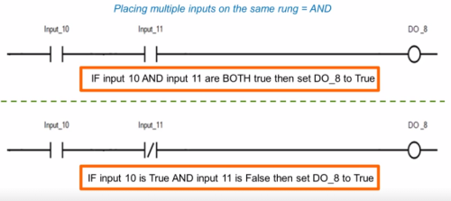
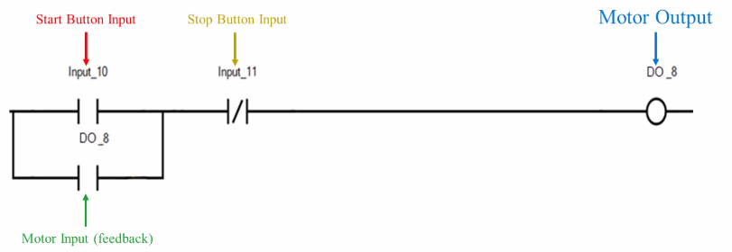

PLC Programming
Program execution of PLC
• A line of code in a PLC program is called a
rung• Each completion of the program is called a
scan• A PLC will complete many scans in a single second. Differently from a SCADA system(every 2 minutes)
Direct(| |) and Reverse(|/|) Contact•
Direct Contact → | |
•
Reverse Contact → |/|
Example: Motor Control IF
Input_10==True THEN
DO_8=True # reppresented by a
Direct Contact | |
IF
Input_11==False THEN
DO_8=True # represented by a
Reverse Contact |/|
IF
Input_10==True OR
DO_8=True THEN
DO_8=True #The OR in the image is reppresented by a
Branch